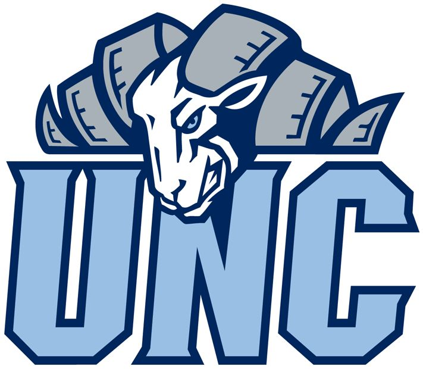
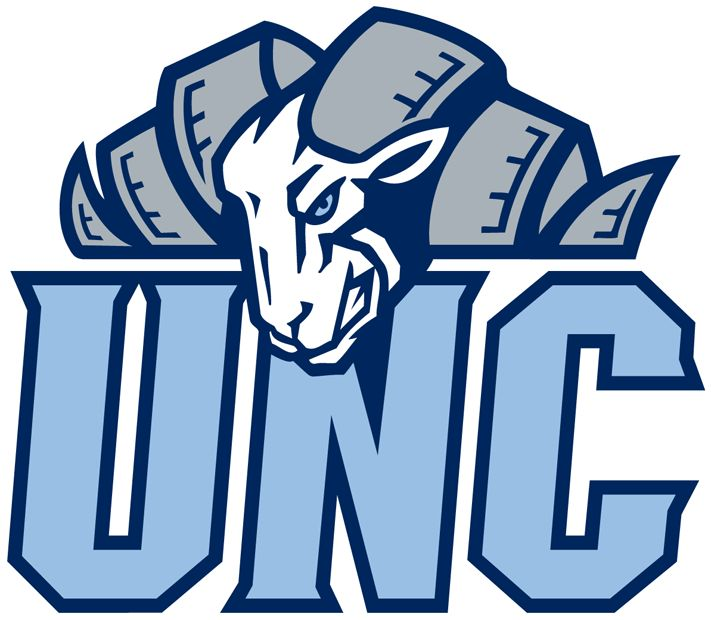

About Me
Benjamin Corter
Chapel Hill, NC 27514 / Charlotte, NC 28037
Email: bjcorter@ad.unc.edu
GitHub: github.com/bjcorter
Linkedin: linkedin.com/in/benjamin-corter
Education
University of North Carolina at Chapel Hill
Bachelor of Arts in Computer Science
Expected Graduation: May 2026
GPA: 3.70
Skills & Interests
- Languages: Python, Java, C, JavaScript, HTML, CSS
- Technologies: FastAPI, Docker, GitHub, Angular
- Concepts: Object-Oriented Programming, Data Structures, Algorithms, System Fundamentals, Web Protocols, Software Engineering, AI and Machine Learning
- Strengths: Team collaboration, problem solving, creativity, strong work ethic
- Career Interests: Software Engineering, Web Development, Artificial Intelligence, Game Development
 
